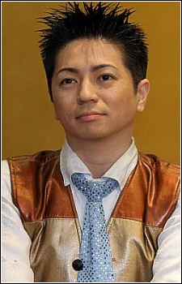

Akio Suyama is a Japanese voice actor. He affiliated with Sigma Seven. He voices Roger Klotz in the Japanese dub of Doug. He has voiced in Attack on Titan and Detective Conan.
- Gender: Male
- Birthday: July 8, 1968

|
|---|
| |
Akio Suyama is a Japanese voice actor. He affiliated with Sigma Seven. He voices Roger Klotz in the Japanese dub of Doug. He has voiced in Attack on Titan and Detective Conan.
|
 |
|---|
| Pelio |
|
Pelio/Pete is a pelican who delivers mail in Animal Village. | |
| Petruchio |
|
Petruchio is a weak young man who works in one of the Montague's mines and is saved from being crushed by Romeo. He was sent to the mines for stealing bread for his poor family. He is desperate to return to Neo Verona to see his younger siblings. | |
| Sorata |
|
Sorata is a cheerful history teacher in the Republican of Hanshin. He is also a fighter in the apocalyptic world of Tokyo. He is married to Arashi. |
Go Back to Main Page |
Go Back to Homepage |
|
|
|
OR |
|